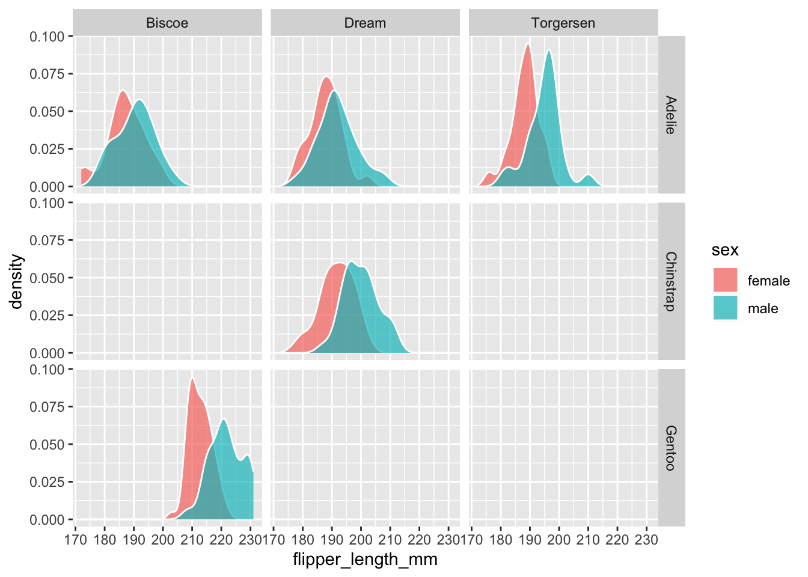
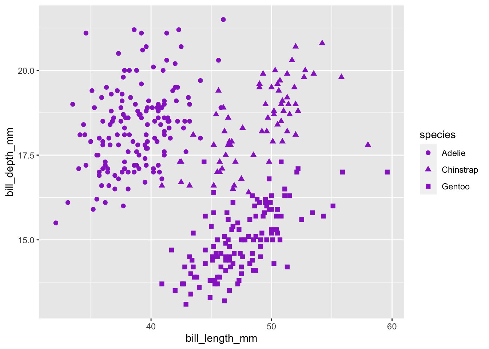
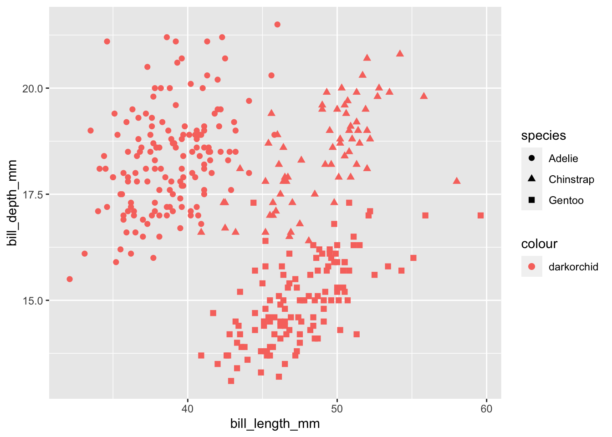
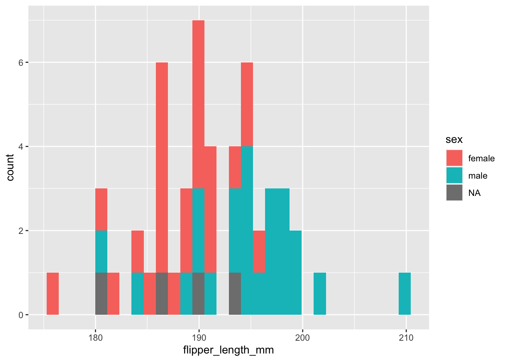
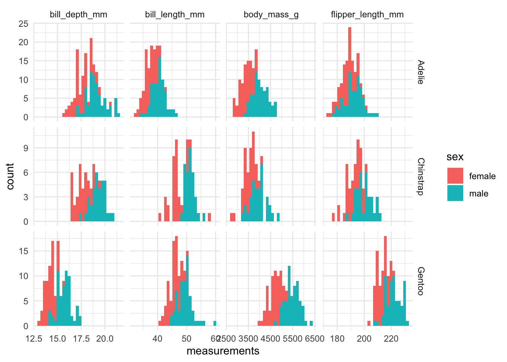
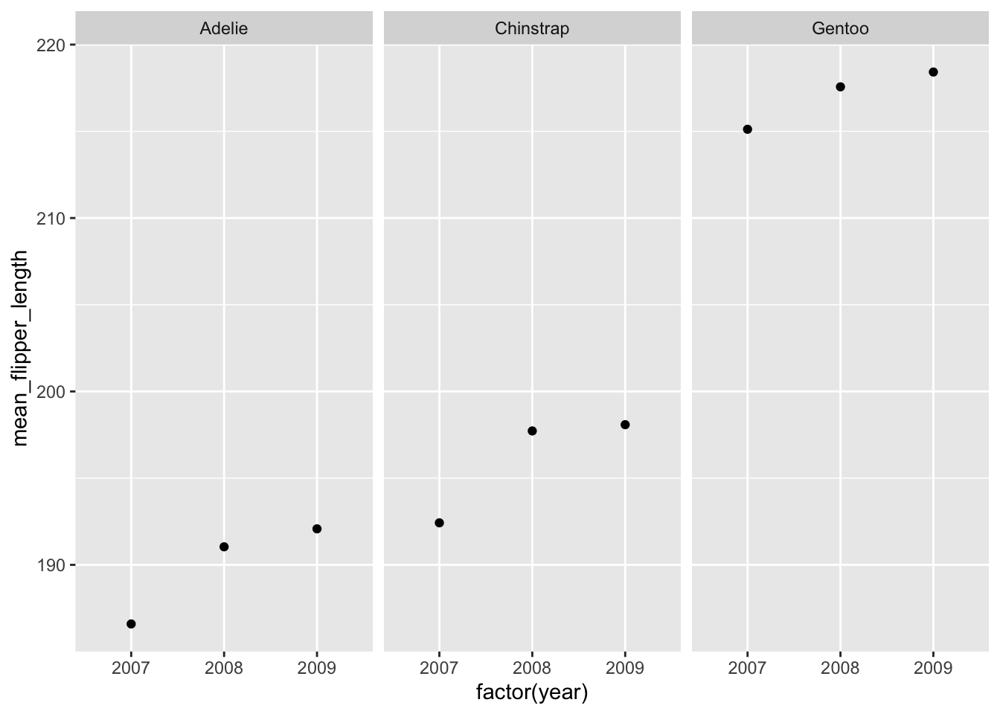

# A tibble: 344 × 8
species island bill_length_mm bill_depth_mm flipper_length_mm body_mass_g
<fct> <fct> <dbl> <dbl> <int> <int>
1 Adelie Torgersen 39.1 18.7 181 3750
2 Adelie Torgersen 39.5 17.4 186 3800
3 Adelie Torgersen 40.3 18 195 3250
4 Adelie Torgersen NA NA NA NA
5 Adelie Torgersen 36.7 19.3 193 3450
6 Adelie Torgersen 39.3 20.6 190 3650
7 Adelie Torgersen 38.9 17.8 181 3625
8 Adelie Torgersen 39.2 19.6 195 4675
9 Adelie Torgersen 34.1 18.1 193 3475
10 Adelie Torgersen 42 20.2 190 4250
# ℹ 334 more rows
# ℹ 2 more variables: sex <fct>, year <int>Flipper Check
Reading data
For this flipper check, we’re going to read in a CSV file of data on penguins that comes from the palmerpenguins package. The data look like this.
Check 1: Fix the error
Let’s try loading the data from penguins.csv
read_csv("penguins.csv")Error in read_csv("penguins.csv"): could not find function "read_csv"Why are we seeing this error and how to do we fix it?
- We haven’t loaded the package from which this function comes. We need to include
library(readr)orlibrary(tidyverse)(correct: when we see an error like this it usually means we haven’t loaded the package (or we mispelled the function name!)) - We misspelled the function name. It’s
read.csv(). (incorrect: good guess, but not in this case.read.csv()is a different function. We should useread_csv()from the tidyverse.) - There’s something wrong with R (incorrect)
- The file doesn’t exist (incorrect: Read the message closely; it says it can’t find the function)
Check 2: Fix the error
Let’s try again, this time loading the tidyverse.
library(tidyverse)
read_csv("penguins.csv")# A tibble: 344 × 8
species island bill_length_mm bill_depth_mm flipper_length_mm body_mass_g
<chr> <chr> <dbl> <dbl> <dbl> <dbl>
1 Adelie Torgersen 39.1 18.7 181 3750
2 Adelie Torgersen 39.5 17.4 186 3800
3 Adelie Torgersen 40.3 18 195 3250
4 Adelie Torgersen NA NA NA NA
5 Adelie Torgersen 36.7 19.3 193 3450
6 Adelie Torgersen 39.3 20.6 190 3650
7 Adelie Torgersen 38.9 17.8 181 3625
8 Adelie Torgersen 39.2 19.6 195 4675
9 Adelie Torgersen 34.1 18.1 193 3475
10 Adelie Torgersen 42 20.2 190 4250
# ℹ 334 more rows
# ℹ 2 more variables: sex <chr>, year <dbl>penguinsError in eval(expr, envir, enclos): object 'penguins' not foundOh jeez, another error. Why do we get this one, and what can we do about it?
- The file doesn’t exist (incorrect: Read the message closely; it says it can’t find
penguins, notpenguins.csv) - No really, there’s something wrong with R. (incorrect: Have a little faith!)
- We didn’t assign the results of
read_csv()topenguins. We needpenguins <- read_csv("penguins.csv"). (correct: R doesn’t save the results ofread_csv()unless we instruct it to with<-.) - The object is called
penguins.csv, notpenguins. (incorrect: the file name ispenguins.csv, butread_csv()doesn’t create an object in R with the same name; we have to tell R what to call it.)
Wrangling data
Check 1: Re-arrange the code
We’re going to continue working with penguins, which looks like this
# A tibble: 344 × 8
species island bill_length_mm bill_depth_mm flipper_length_mm body_mass_g
<fct> <fct> <dbl> <dbl> <int> <int>
1 Adelie Torgersen 39.1 18.7 181 3750
2 Adelie Torgersen 39.5 17.4 186 3800
3 Adelie Torgersen 40.3 18 195 3250
4 Adelie Torgersen NA NA NA NA
5 Adelie Torgersen 36.7 19.3 193 3450
6 Adelie Torgersen 39.3 20.6 190 3650
7 Adelie Torgersen 38.9 17.8 181 3625
8 Adelie Torgersen 39.2 19.6 195 4675
9 Adelie Torgersen 34.1 18.1 193 3475
10 Adelie Torgersen 42 20.2 190 4250
# ℹ 334 more rows
# ℹ 2 more variables: sex <fct>, year <int>We’re going to use dplyr to create a new data frame from these data, which looks like this.
# A tibble: 8 × 3
# Groups: species [3]
species sex flipper_length_mm
<chr> <chr> <dbl>
1 Gentoo male 222.
2 Gentoo <NA> 216.
3 Gentoo female 213.
4 Chinstrap male 200.
5 Adelie male 192.
6 Chinstrap female 192.
7 Adelie female 188.
8 Adelie <NA> 186.Re-arrange the code below to correctly get the answer
flipper_length
penguins <- read_csv("penguins.csv")
arrange(desc(flipper_length_mm))
summarize(flipper_length_mm = mean(flipper_length_mm, na.rm = TRUE)) |>
group_by(species, sex) |>
flipper_length <- penguins |> Check 1: Solution
penguins <- read_csv("penguins.csv")
flipper_length <- penguins |>
group_by(species, sex) |>
summarize(flipper_length_mm = mean(flipper_length_mm, na.rm = TRUE)) |>
arrange(desc(flipper_length_mm))
flipper_lengthCheck 2: Fix the error
Why doesn’t this code work, and what do we need to do?
penguins |>
filter(year = 2007)Error in `filter()`:
! We detected a named input.
ℹ This usually means that you've used `=` instead of `==`.
ℹ Did you mean `year == 2007`?- We misspelled the variable name (incorrect:
yearis a variable inpenguins, and it’s spelled correctly here) - We need to use
==to check equality, not=.year == 2007will fix it. (correct: Correct!) - We need to use
select()to subset rows (incorrect:select()subsets columns andfilter()subsets rows) - There’s no year 2007 in the dataset (incorrect:
2007is a valid value in this dataset)
Data visualization 1
Check 1: Drag and drop the functions
We want to create this plot:

Drag and drop the code into the right spot. Consider what you’re seeing in the plot and the arguments you’re seeing in the code.
penguins |>
drop_na() |>
ggplot(aes(x = ____, fill = ____)) +
____(alpha = .7, color = "white") +
____(species ~ island)Options:
geom_densitygeom_histogramgeom_pointislandflipper_length_mmgeom_pointfacet_gridbody_mass_gfacet_wrap
Check 1: Solution
penguins <- read_csv("penguins.csv")
penguins |>
drop_na() |>
ggplot(aes(x = flipper_length_mm, fill = sex)) +
geom_density(alpha = .7, color = "white") +
facet_grid(species ~ island)Check 2: Fix the plot
There’s something strange happening when I try to make a plot of bill depth vs bill length
I expected this plot

But this code produces something different
ggplot(penguins, aes(x = bill_length_mm, y = bill_depth_mm)) +
geom_point(
aes(shape = species, color = "darkorchid"),
size = 2
) 
What mistake did I make, and how do I fix it?
- “darkorchid” is not a color. You need to supply a valid color. (Incorrect: This is a color available in R)
color = "darkorchid"should go in theaes()inside theggplot()function (Incorrect: This will result in the same plot)coloris not the right aesthetic. You needfill. (Incorrect:coloris the right aesthetic)- You put
color = "darkorchid"insideaes(). It’s not a variable, so it should go outsideaes(). (Correct:aes()maps data to our plot."darkorchid"isn’t data in our dataset, it’s the name of a color available in R.)
Data visualization 2
Check 1: Drag and drop the functions
We want to create this plot:

Drag and drop the functions into the right spot. Consider what you’re seeing in the plot and the arguments you’re seeing in the code.
penguins <- read_csv("penguins.csv")
penguins |>
drop_na() |>
ggplot(aes(
x = flipper_length_mm,
y = body_mass_g,
color = sex
)) +
_____(alpha = 0.3) +
_____(se = FALSE, method = "lm") +
_____(begin = .2, end = .8) +
_____(~ species)Options:
geom_linescale_color_viridis_dtheme_minimalfacet_wrapscale_loggeom_pointfacet_gridscale_y_log10geom_smooth
Check 1: Solution
penguins <- read_csv("penguins.csv")
penguins |>
drop_na() |>
ggplot(aes(
x = flipper_length_mm,
y = body_mass_g,
color = sex
)) +
geom_point(alpha = 0.3) +
geom_smooth(se = FALSE, method = "lm") +
scale_color_viridis_d(begin = .2, end = .8) +
facet_wrap(~ species)Check 2: Fix the plot
I’m trying to create a plot, but I keep seeing this error.
penguins |>
drop_na() |>
ggplot(aes(
x = body_mass_g,
fill = sex
)) |>
geom_density(alpha = 0.7, color = NA) |>
theme_minimal() |>
facet_wrap(~ species, ncol = 1)Error in `geom_density()`:
! `mapping` must be created by `aes()`
ℹ Did you use `%>%` or `|>` instead of `+`?What do I need to do to fix it?
- R can’t find the dataset. Read in the
penguinsdataset. - You used
|>for ggplot2 functions, but you need to use+. (Correct) - You haven’t attached ggplot2. Load the ggplot2 package.
- You used
+but you need to use|>
Tidying data
Check 1: See the tidiness
Consider this summary table of the penguins dataset
Rows: 344 Columns: 8
── Column specification ────────────────────────────────────────────────────────
Delimiter: ","
chr (3): species, island, sex
dbl (5): bill_length_mm, bill_depth_mm, flipper_length_mm, body_mass_g, year
ℹ Use `spec()` to retrieve the full column specification for this data.
ℹ Specify the column types or set `show_col_types = FALSE` to quiet this message.# A tibble: 3 × 4
species Biscoe Dream Torgersen
<chr> <int> <int> <int>
1 Adelie 44 56 52
2 Chinstrap NA 68 NA
3 Gentoo 124 NA NACheck 2:
Take a look at this plot:
penguins_plot_data |>
drop_na() |>
ggplot(aes(measurements, fill = sex)) +
geom_histogram() +
facet_grid(species ~ type, scales = "free") +
theme_minimal() `stat_bin()` using `bins = 30`. Pick better value with `binwidth`.
Which line of code did I use to reshape the data necessary for this plot?
penguins_plot_data <- penguins |>
_____pivot_longer(bill_length_mm:body_mass_g, names_to = "type", values_to = "measurements")(correct)pivot_wider(bill_length_mm:body_mass_g, names_to = "type", values_to = "measurements")pivot_wider(names_from = bill_length_mm:body_mass_g, values_from = everything())pivot_longer(names_from = bill_length_mm:body_mass_g, values_from = everything()
As a reminder, here’s what the original penguins dataset looks like
penguins# A tibble: 344 × 8
species island bill_length_mm bill_depth_mm flipper_length_mm body_mass_g
<chr> <chr> <dbl> <dbl> <dbl> <dbl>
1 Adelie Torgersen 39.1 18.7 181 3750
2 Adelie Torgersen 39.5 17.4 186 3800
3 Adelie Torgersen 40.3 18 195 3250
4 Adelie Torgersen NA NA NA NA
5 Adelie Torgersen 36.7 19.3 193 3450
6 Adelie Torgersen 39.3 20.6 190 3650
7 Adelie Torgersen 38.9 17.8 181 3625
8 Adelie Torgersen 39.2 19.6 195 4675
9 Adelie Torgersen 34.1 18.1 193 3475
10 Adelie Torgersen 42 20.2 190 4250
# ℹ 334 more rows
# ℹ 2 more variables: sex <chr>, year <dbl>Types and functions
Check 1: Re-arrange the code
Consider this function
penguins |>
plot_flipper_by_island("Torgersen")`stat_bin()` using `bins = 30`. Pick better value with `binwidth`.Warning: Removed 1 rows containing non-finite values (`stat_bin()`).
Rearrange the following code to produce the above function
}
filter(island == .island) |>
.data |>
geom_histogram()
plot_flipper_by_island <- function(.data, .island) {
ggplot(aes(flipper_length_mm, fill = sex)) + Check 1: solution
plot_flipper_by_island <- function(.data, .island) {
.data |>
filter(island == .island) |>
ggplot(aes(flipper_length_mm, fill = sex)) +
geom_histogram()
}Check 2: Debug the function
I want to change plot_flipper_by_island() to plot a histogram of any variable in the dataset. My code, however, doesn’t work.
plot_flipper_by_island <- function(.data, .var, .island) {
.data |>
filter(island == .island) |>
ggplot(aes(.var, fill = sex)) +
geom_histogram()
}
penguins |>
plot_flipper_by_island(bill_depth_mm, "Torgersen")Error in `geom_histogram()`:
! Problem while computing aesthetics.
ℹ Error occurred in the 1st layer.
Caused by error in `FUN()`:
! object 'bill_depth_mm' not foundWhat is the problem?
.varisn’t a valid variable name. You need to change it tovar.- You didn’t supply enough arguments to the function. You need to add one more.
- You need to define the
bill_depth_mmobject - You didn’t use curly-curly. You need to change
.varto{{ .var }}so ggplot knows where to look for the variable (Correct)
Functional programming
Check 1: Drag and drop
- Across + groupby + summarize
Consider this summary table
`summarise()` has grouped output by 'species'. You can override using the
`.groups` argument.# A tibble: 6 × 10
# Groups: species [3]
species sex bill_length_mm_1 bill_length_mm_2 bill_depth_mm_1
<chr> <chr> <dbl> <dbl> <dbl>
1 Adelie female 37.3 2.03 17.6
2 Adelie male 40.4 2.28 19.1
3 Chinstrap female 46.6 3.11 17.6
4 Chinstrap male 51.1 1.56 19.3
5 Gentoo female 45.6 2.05 14.2
6 Gentoo male 49.5 2.72 15.7
# ℹ 5 more variables: bill_depth_mm_2 <dbl>, flipper_length_mm_1 <dbl>,
# flipper_length_mm_2 <dbl>, body_mass_g_1 <dbl>, body_mass_g_2 <dbl>Drag and drop the code into the right spot to create this table
penguins |>
drop_na() |>
____ |>
summarize(
____(
____,
____
)
)Options:
mutate group_by(species, sex) bill_length_mm:body_mass_g starts_with(“bill”) list(mean, sd) map across
Check 1: Solution
penguins |>
drop_na() |>
group_by(species, sex) |>
summarize(
across(
bill_length_mm:body_mass_g,
list(mean, sd)
)
)`summarise()` has grouped output by 'species'. You can override using the
`.groups` argument.# A tibble: 6 × 10
# Groups: species [3]
species sex bill_length_mm_1 bill_length_mm_2 bill_depth_mm_1
<chr> <chr> <dbl> <dbl> <dbl>
1 Adelie female 37.3 2.03 17.6
2 Adelie male 40.4 2.28 19.1
3 Chinstrap female 46.6 3.11 17.6
4 Chinstrap male 51.1 1.56 19.3
5 Gentoo female 45.6 2.05 14.2
6 Gentoo male 49.5 2.72 15.7
# ℹ 5 more variables: bill_depth_mm_2 <dbl>, flipper_length_mm_1 <dbl>,
# flipper_length_mm_2 <dbl>, body_mass_g_1 <dbl>, body_mass_g_2 <dbl>Check 2: Debug the code
I’m trying to calculate a vector of means for every column in penguins that’s numeric. When I run my code, I see this error:
penguins |>
select(where(is.numeric)) |>
map_dbl(mean())Error in mean.default(): argument "x" is missing, with no defaultWhat did I do wrong, and how do I fix it?
- You wrote
mean()but you shouldn’t include()because we’re passing the function tomap(), not calling it. Remove the(). (Correct) - You used
map_dbl()butmean()returns an integer. Usemap_int(). - You didn’t specify the
xargument formap(). It should bemap(penguins, mean()). map()doesn’t work with dataframes. You need to give it a list.
Quarto 1
Check 1: Drag and drop
Consider the following Quarto document
A summary of penguin measurements

This dataset includes information on 3 species from 3 Islands.
# A tibble: 6 × 10
# Groups: species [3]
species sex bill_length_mm_1 bill_length_mm_2 bill_depth_mm_1
<chr> <chr> <dbl> <dbl> <dbl>
1 Adelie female 37.3 2.03 17.6
2 Adelie male 40.4 2.28 19.1
3 Chinstrap female 46.6 3.11 17.6
4 Chinstrap male 51.1 1.56 19.3
5 Gentoo female 45.6 2.05 14.2
6 Gentoo male 49.5 2.72 15.7
# ℹ 5 more variables: bill_depth_mm_2 <dbl>, flipper_length_mm_1 <dbl>,
# flipper_length_mm_2 <dbl>, body_mass_g_1 <dbl>, body_mass_g_2 <dbl>Measurements vary by both species and sex. See Figure 1 for more information.

Rearrange the following components to generate the report:
This dataset includes information on `r n_distinct(penguins$species)` species from `r n_distinct(penguins$island)` Islands.
## A summary of penguin measurements
```{r}
#| label: fig-hist
#| fig-cap: "Measurements by species and sex"
#| echo: false
#| message: false
penguins |>
pivot_longer(
bill_length_mm:body_mass_g,
names_to = "type",
values_to = "measurements"
) |>
drop_na() |>
ggplot(aes(measurements, fill = sex)) +
geom_histogram() +
facet_grid(species ~ type, scales = "free") +
theme_minimal()
```
```{r}
#| label: summarize-data
#| echo: false
#| message: false
penguins |>
drop_na() |>
group_by(species, sex) |>
summarize(
across(
bill_length_mm:body_mass_g,
list(mean, sd)
)
)
```
```{r}
#| label: include-diagram
#| echo: false
knitr::include_graphics("culmen_depth.png")
```
Measurements vary by both species and sex. See @fig-hist for more information. Check 1: Solution
## A summary of penguin measurements
```{r}
#| label: include-diagram
#| echo: false
knitr::include_graphics("culmen_depth.png")
```
This dataset includes information on `r n_distinct(penguins$species)` species from `r n_distinct(penguins$island)` Islands.
```{r}
#| label: summarize-data
#| echo: false
#| message: false
penguins |>
drop_na() |>
group_by(species, sex) |>
summarize(
across(
bill_length_mm:body_mass_g,
list(mean, sd)
)
)
```
Measurements vary by both species and sex. See @fig-hist for more information.
```{r}
#| label: fig-hist
#| fig-cap: "Measurements by species and sex"
#| echo: false
#| message: false
penguins |>
pivot_longer(
bill_length_mm:body_mass_g,
names_to = "type",
values_to = "measurements"
) |>
drop_na() |>
ggplot(aes(measurements, fill = sex)) +
geom_histogram() +
facet_grid(species ~ type, scales = "free") +
theme_minimal()
```Check 2: Debug the render error
When I render the report, I see this error:
Error in n_distinct(penguins$species): could not find function "n_distinct"What mistake did I make, and how do I fix it?
n_distinct()isn’t a function. You need to runlength(unique())- You didn’t load your packages. Quarto documents run in fresh R sessions, so you need to include
library(tidyverse)andlibrary(palmerpenguins)in your document. (Correct) - You didn’t load your packages. You need to run
library(tidyverse)andlibrary(palmerpenguins)in the console before rendering. - Your R session is misconfigured. You need to reinstall R.
Quarto 2
Check 1: Drag and drop
Consider the following Quarto document
Flipper length by year and species

This dataset includes information on 3 species across 3 years.

Flipper length is greatest among Gentoo penguins. As penguins aged, their flippers got longer. See Figure 2 for more information.
Fill in the blanks to render the report correctly
## Flipper length by year and species
____
#| label: include-figure
____
knitr::include_graphics("lter_penguins.png")
____
This dataset includes information on `r n_distinct(penguins$species)` species across ____ years.
```{r}
_____
#| fig-cap: "Flipper length by year and species"
#| echo: false
#| message: false
penguins |>
group_by(species, year) |>
summarize(
mean_flipper_length = mean(flipper_length_mm, na.rm = TRUE),
.groups = "drop"
) |>
ggplot(aes(factor(year), mean_flipper_length)) +
geom_point() +
facet_wrap(~ species)
```
Flipper length is greatest among Gentoo penguins. As penguins aged, their flippers got longer. See ____ for more information. Options: 3 #| label: fig-flippers 3 Figure 2 ::: {.cell}
::: #| label: tbl-flippers #| echo: false
Check 1: Solution
## Flipper length by year and species
```{r}
#| label: include-figure
#| echo: false
knitr::include_graphics("lter_penguins.png")
```
This dataset includes information on `r n_distinct(penguins$species)` species across `r n_distinct(penguins$year)` years.
```{r}
#| label: fig-flippers
#| fig-cap: "Flipper length by year and species"
#| echo: false
#| message: false
penguins |>
group_by(species, year) |>
summarize(
mean_flipper_length = mean(flipper_length_mm, na.rm = TRUE),
.groups = "drop"
) |>
ggplot(aes(factor(year), mean_flipper_length)) +
geom_point() +
facet_wrap(~ species)
```
Flipper length is greatest among Gentoo penguins. As penguins aged, their flippers got longer. See @fig-flippers for more information. Check 2: Fix the render error
I copied and pasted the last chunk to make a second plot in the report, but now when I render the report, I see this error:
Error in parse_block(g[-1], g[1], params.src, markdown_mode) :
Duplicate chunk label 'fig-flippers', which has been used for the chunk:
penguins |>
group_by(species, year) |>
summarize(
mean_flipper_length = mean(flipper_length_mm, na.rm = TRUE),
.groups = "drop"
) |>
ggplot(aes(factor(year), mean_flipper_length)) +
geom_point() +
facet_wrap(~ species)
Calls: .main ... process_file -> split_file -> lapply -> FUN -> parse_block
Execution haltedWhat did I do wrong, and how do I fix it?
- You didn’t save the file. Save it and re-render.
- You can’t include the same plot twice in Quarto. Update your plotting code in one of the chunks.
- You forgot to load your packages. Load `library(ti)
- When you copied the previous chunk, you didn’t change the chunk label. You can’t have duplicate chunk labels, so you need to change it to something else. (Correct)